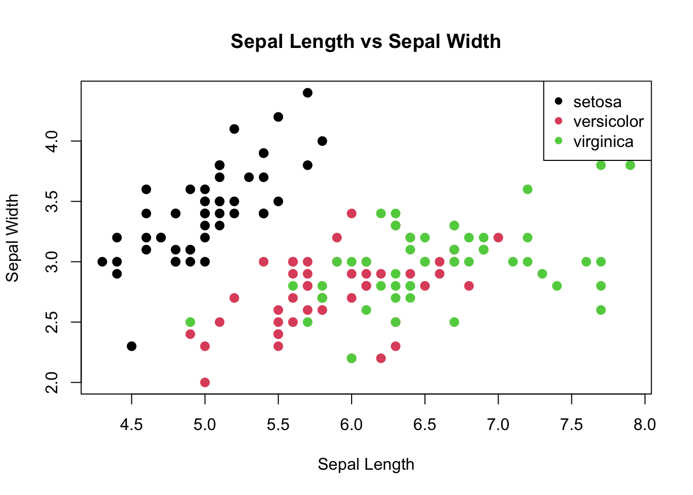
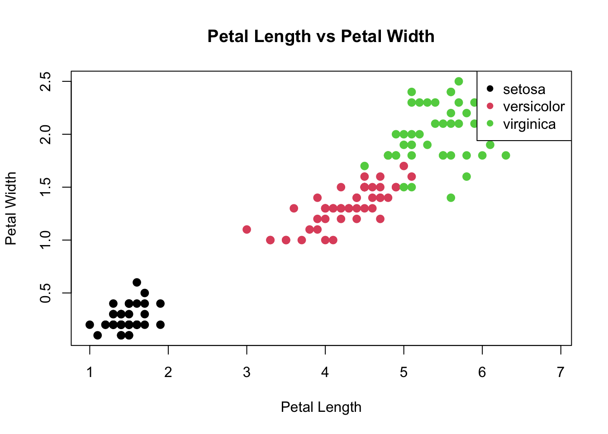

print("Hello world!")[1] "Hello world!"Basic programming in R and Python and version control with git
Dee Ruttenberg (Adapted from Scott Wolf, Michelle White)
January 28, 2026
Labs can be found here.
We’re going to mostly be doing the precept problem sets during class, but I’ll be posting them as well. If you don’t finish during class, you can finish them on your own time and submit them to the appropriate assignment in 1 week to GitHub Classroom.
This precept is focused on getting started programming with R and utilizing git for version control – including how we will submit assigments and projects throughout the semester.
We support two IDEs in the course: RStudio and VS Code. I’ll be using RStudio for the early precepts, and VS Code for the later precepts. VS Code is a bit more lightweight and extensible, but RStudio has a lot of nice features specifially for R.
Before going forward, lets install the basic software we need (you should have done this last week!): R and git.
VS Code. Once you’ve installed and lauched VS Code, you’ll need to grab a few extensions. I’d recommend getting the R Extension and the Python Extension at minimum.
Make sure that you’re able to run basic R code like the following:
For the semester we’re going to be using GitHub Classroom to manage assignments and projects. You should have received an announcement with the Classroom link. If you haven’t, please let me know.
If you have not already installed git, make sure to install it. The installation guide can be found here: https://git-scm.com/book/en/v2/Getting-Started-Installing-Git.
First, you’ll need to create an account on GitHub. You can do that https://github.com/join.
Install GitHub CLI – found here: https://cli.github.com/ – and authenticate with GitHub. You can do this by running the following command in your terminal:
A terminal is essentially the directory which underlies your computer. We will discuss terminal manipulation in unix later this semester. For now, you should be able to find it by searching for terminal.
When you accept the assignment, it will create a private repository (only visible to BIO331 staff and yourself) that you can use. Once you have that repository, you can clone it to your local machine and start working on it.
To clone the repository, you’ll need to copy the URL from the repository page. You can do this by clicking the green “Code” button and copying the URL. Then, in your terminal, you can run git clone <URL> to clone the repository to your local machine.
git clone https://github.com/Stonehill-College-Bioinformatics/introduction-to-github-classroom-{GITHUB_USERNAME}.git # Note that this can be found on the repository page under the green "Code" button after github has created the repository
cd introduction-to-github-classroom-{GITHUB_USERNAME}
git checkout -b precept-1 # or what you want to call your branchFor this assignment, you can just create an simple example R file containing some code and text. You can then commit and push your changes to the branch you created.
Running R code: To run R code (in RStudio or VSCode), you can hit cmd+enter while selecting the line or block of code you want to run (if no line(s) are selected, then just the line that your cursor is on will run). You can also run the entire file by hitting cmd+shift+s or cmd+shift+enter. If you’re working on windows, you can use ctrl instead of cmd. You can also just click the play button in the top-right corner of the VSCode editor to run the entire file!
Our goal is to make a simple R file for exploring the iris data set (we’ll explain the structure of this dataset in two labs!).
# ----- Loading and Exploring the iris dataset -----
# Load the dataset -- note that this is a built-in dataset in R
data(iris)
# View the first few rows to understand its structure
head(iris) Sepal.Length Sepal.Width Petal.Length Petal.Width Species
1 5.1 3.5 1.4 0.2 setosa
2 4.9 3.0 1.4 0.2 setosa
3 4.7 3.2 1.3 0.2 setosa
4 4.6 3.1 1.5 0.2 setosa
5 5.0 3.6 1.4 0.2 setosa
6 5.4 3.9 1.7 0.4 setosa'data.frame': 150 obs. of 5 variables:
$ Sepal.Length: num 5.1 4.9 4.7 4.6 5 5.4 4.6 5 4.4 4.9 ...
$ Sepal.Width : num 3.5 3 3.2 3.1 3.6 3.9 3.4 3.4 2.9 3.1 ...
$ Petal.Length: num 1.4 1.4 1.3 1.5 1.4 1.7 1.4 1.5 1.4 1.5 ...
$ Petal.Width : num 0.2 0.2 0.2 0.2 0.2 0.4 0.3 0.2 0.2 0.1 ...
$ Species : Factor w/ 3 levels "setosa","versicolor",..: 1 1 1 1 1 1 1 1 1 1 ... Sepal.Length Sepal.Width Petal.Length Petal.Width
Min. :4.300 Min. :2.000 Min. :1.000 Min. :0.100
1st Qu.:5.100 1st Qu.:2.800 1st Qu.:1.600 1st Qu.:0.300
Median :5.800 Median :3.000 Median :4.350 Median :1.300
Mean :5.843 Mean :3.057 Mean :3.758 Mean :1.199
3rd Qu.:6.400 3rd Qu.:3.300 3rd Qu.:5.100 3rd Qu.:1.800
Max. :7.900 Max. :4.400 Max. :6.900 Max. :2.500
Species
setosa :50
versicolor:50
virginica :50
# ----- Data Visualization -----
# Scatter plot visualizing the relationship between Sepal measurements
plot(iris$Sepal.Length, iris$Sepal.Width, main="Sepal Length vs Sepal Width",
xlab="Sepal Length", ylab="Sepal Width", col=iris$Species, pch=16, cex=1.3)
legend("topright", legend=levels(iris$Species), col=1:3, pch=16)
# Scatter plot visualizing the relationship between Petal measurements
plot(iris$Petal.Length, iris$Petal.Width, main="Petal Length vs Petal Width",
xlab="Petal Length", ylab="Petal Width", col=iris$Species, pch=16, cex=1.3)
legend("topright", legend=levels(iris$Species), col=1:3, pch=16)
# ----- Modifying the Dataset -----
# Add a new column 'Petal.Length.Class' that classifies flowers based on petal length
iris$Petal.Length.Class <- ifelse(iris$Petal.Length < 2, "Short",
ifelse(iris$Petal.Length < 5, "Medium", "Long"))
# View the initial rows of the modified dataset to see the added column
head(iris) Sepal.Length Sepal.Width Petal.Length Petal.Width Species Petal.Length.Class
1 5.1 3.5 1.4 0.2 setosa Short
2 4.9 3.0 1.4 0.2 setosa Short
3 4.7 3.2 1.3 0.2 setosa Short
4 4.6 3.1 1.5 0.2 setosa Short
5 5.0 3.6 1.4 0.2 setosa Short
6 5.4 3.9 1.7 0.4 setosa ShortNote that after you set the upstream branch, you can just run git push to push your changes to the remote repository.
Once you make any changes to the main branch, the assignment will be marked as submitted. To avoid your work being marked as submitted, make sure you use branches and pull requests.
Once you’ve made changes to your development branch, you can make a PR that details all of the changes you’ve made across multiple commits. This allows you to merge back in a single unit of work.
To create a Pull Request on GitHub, you navigate to your branch (under branches on web interface), and select contribute > open pull request.
# Summary
This PR shows example formatting. Because PRs are the primary location at which code is evaluated, make sure that your PRs are clear and descriptive. PRs can include markdown so they can become relatively complex if the assignment is complicated. This should be paired with will documented code to allow others to easily follow your design and implementation.
# Design notes
N/A
# Implementation notes
N/AWARNING
Be careful here! Please try to only merge PRs when you have completed assignments. If you merge multiple PRs for an assignment, I’ll try to loop back to them if I’ve already graded one, but if I miss them for some reason, please let me know!
For this precept, you’ll just need to make a merged PR with your changes. I’ll be checking the PRs for the assignment to make sure you wrote something in R and Python and that you’ve made a well structured PR and merged. If you have any questions, please let me know!